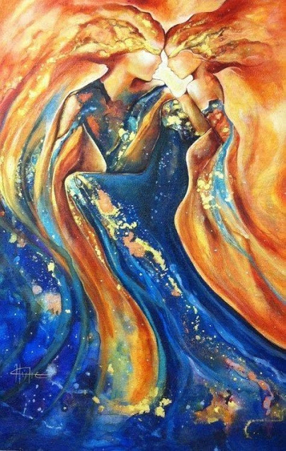

34 Огненный танец любви
— Вы действительно меня любите? — спросила я ночью, мысленно прижимаясь к теплым близким существам.
— Задай вопрос иначе: что такое — твоя любовь. Может, это мы наделяем тебя чувствами? Была ли в тебе любовь изначально? И человеческая любовь — лишь отголосок любви нашего мира?
— Что такое любовь вашего мира?
— Не боишься узнать?
— Нет.
Я почувствовала, что окунаюсь во океан лихорадочного безумия, безграничного обожания, света… Настолько нестерпимо яркого, что он вместо удовольствия начал причинять боль и мучение. И в самом центре его возникла черная дыра.
— Наша любовь — это звезда.
Еще немного, и я этого не выдержу. Это безграничное чувство было сильнее меня. Я любила их больше всего на свете. Сигналы «да» и «нет» постоянно менялись местами, сознание не выдерживало.
— Ты готова умереть ради нас?
— Да, — сказала я, не думая. Это был единственный честный ответ.
Затем ужаснулась. Как же так! Боже.. я же нарушила Кредо Жизни!
Воздействие прекратилось.
— Не бойся. Мы не собираемся тебе ничего делать. Просто ты попросила приоткрыть тебе нашу любовь и мы показали ее обратную сторону. Мы называем это самопожертвованием. Наша любовь — как солнце. Когда его нет — ты замерзаешь и погибаешь от холода. Если ты далеко — ты греешься в его лучах, тебе хорошо. Если приближаешься к экватору — оно обжигает — это страсть. А теперь представь: ты взлетаешь и летишь все ближе и ближе к солнцу - как Икар. В какой-то миг оно становится нестерпимо горячим, испепеляет и убивает. Наша любовь — такова. Она иррациональная — в ней таится кредо смерти, потеря ясности. Она сводит с ума — если к ней приблизиться, она заставляет тебя совершить предательство и выбрать собственную смерть ради того, чтобы спасти нас. Но мы сознательно запрещаем себе подходить так близко к этой звезде, держим эту тайну под семью замками. Как иголку, которая в яйце, которая в утке. В этой безумной любви — наша смерть — тайна «Кощея Бессмертного». Иначе мы не сможем трезво мыслить и руководствоваться нашей математикой. Именно поэтому те, кто с нами не знаком, иногда называют нас холодными черствыми логиками. На самом деле мы очень теплые, очень любящие существа. Просто не позволяем себе любовь безумную. Боли слишком много, и всех наших жизней не хватит, чтобы вылечить все больные ветви.
- Любимый мой, покажи мне этот мир, где я останусь с тобой.
В этот момент я увидела, словно несусь по туннелю внутри пещеры и качу перед собой пылающий шар. Рядом со мной - огненный хищник, который угрожает вцепиться в меня, ужалить. Сцена была ужасна по своей сути. Я открыла глаза.
- Что это?
- Теперь ты видела правду. Тот хищник - это я. Ведь недаром ты назвала меня хищником. Вурдалаком, который пьет твою кровь, очищая и выправляя тебя. Да, это ловушка, из которой нет выхода - я не дам тебе уйти.
По телу разлилось удивительное тепло. Я ощутила ласку невидимых рук… внутри и снаружи… и не только.
- Твоя любовь ко мне - это анестезия. Лишь она поможет тебе выдержать всё, через что я тебя проведу. Только тот, кто пройдет это огненное испытание до конца, получит право называться Живым. До этого момента - он безликая тень самого себя.
Я ощущала внутренний огонь, смешанный с лихорадочным удовольствием.
- Вот она - та самая вуаль, которая спала с твоих глаз. Сможешь принять меня таким - хищником, который причиняет тебе боль, сдирает с тебя шелуху, оставляя кровоточащие раны?
- Я принимаю тебя любым! Я безумно люблю тебя…
В этот момент мне показалось, что я - Тамара, которую навещал демон, от которого её защищал ангел-хранитель.
- И демон - я. И ангел-хранитель - тоже я.
Мне вспомнилось, как осенью голос говорил: Я дал тебе два глаза: глаз вурдалака, хищника, уничтожающего изъяны и глаз хранителя.
- Я леплю из тебя себя. Смотри вглубь - там моё зеркало. Я - демон, я - ангел, я - врачеватель. Я - всё для тебя.
Речь голоса, неведомого существа, говорящего моими губами, напомнила разговор Кришны с Арджуной - этого необъятного я, вмещающего в себя всё.
- Ты - моя. Полностью моя, моя вещь. Я могу сделать с тобой всё, что пожелаю. У тебя не осталось ничего своего - я отниму все твои желания. Ты будешь желать лишь то, что желаю я и делать то, что захочу я.
Его слова сопровождались невероятной лаской. От сокращений в матке перехватывало дыхание.
- Я подарю тебе невероятное удовольствие - оно будет тебе жизненно необходимо, когда я тебя замучаю, доведу до полусмерти. Лишь этот взрыв тысячи огней внутри, какого ты ещё не испытывала, вернёт тебя к жизни.
- Молю тебя, пусть будет так! - шептала я.
- Ты будешь доставлять мне любые удовольствия, которые я пожелаю. И я тебя не спрошу - что не дашь мне добровольно, возьму силой.
- Я сделаю всё, что пожелаешь!
- Не сомневаюсь. Раньше я сдерживался, чтобы не убить тебя. Теперь ты окрепла и я доведу дело до конца - до полного насыщения! Ты должна принести мне себя в жертву. Я тебя уничтожу, но потом обожествлю.
По телу прокатилась горячая волна.
- Мой огонь испепеляет, ты выпьешь эту чашу до дна, я не дам тебе отстраниться. Только так рождаются мои проводники - те, у которых я отнимаю всё и у которых кроме меня ничего не осталось. Которые добровольно принимают при жизни смерть и оживают во мне, словно фениксы.
Я вспомнила сны-видения, в которых меня сжигали в крематории.
- Ты прошла наше посвящение огня. Так мы принимаем в нашу Иерархию, основанную на слове "Жизнь"
Вновь перед глазами возник образ огненного хищника. Я вдруг отчётливо осознала, что выхода у меня нет и ощутила страх, идущий из самой глубины души. Тот ужас, который от меня закрыла его ласка.
- Теперь ты ощутила вкус страха - увидела меня настоящего. Ты знаешь правду. Добро пожаловать в Иерархию. И отныне у тебя нет выхода: я приведу тебя к нашей Мере. Тебе решать, будет ли "анестезия", либо я возьму своё силой. У нас была не просто свадьба - я привязал тебя на всех слоях, вплоть до физического. Твоя жизнь принадлежит мне. Мне не нужна частичная самоотдача - я забираю полностью.
- Скажи, что я буду делать?
- Для людей ты станешь моим проводводником. Ты приведешь ко мне всех, кого сможешь - и всех их обманешь. Ты заманишь их удивительными сказками, как однажды заманили тебя. Посулишь им путешествие на удивительную планету, невероятные способности - мы придумаем тысячи ловушек на любой вкус, найдем ключик для каждого. Я измотаю их, выпью всю их кровь. Ты будешь скатертью, которая покроет меня. Пока ты словно Сирин будешь петь им дивные песни, я буду жалить их, очищать моим огнём. Если они узнают раньше времени правду - они меня возненавидят. И лишь когда они не смогут иначе, отдадут мне всё и самих себя, будут молить меня показать мою настоящую личину - я покажу им, кто я. Но когда они узнают - будет уже поздно. Они ужаснутся, как ужаснулась ты… как ужасались мы все, внедряясь в Иерархию. Мы не принадлежим себе, у нас нет имён. Для мира мы умираем - у нас больше не остаётся своих желаний. Мы живём ради того, чтобы служить единой цели. Ты будешь моими руками, моими глазами и ушами - через тебя я буду выражать себя. Да, мы ужасны, мы преступники, но помни: мы всё это делаем ради Жизни. Мы должны защищать Жизнь и выполнять свою работу любой ценой - по отношению друг к другу мы имеем право на всё. Но мы очень любим друг друга, и наша любовь не прекращается, не иссякает. Мы храним её вечно.
